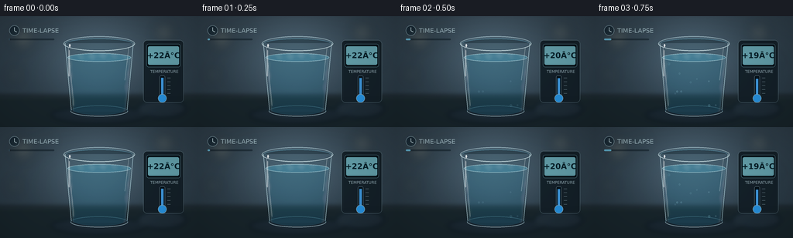
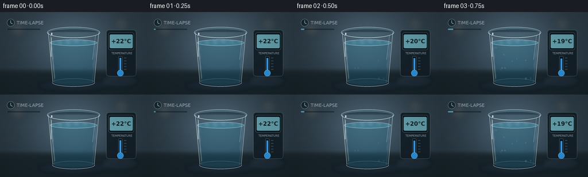
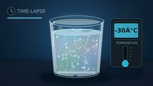
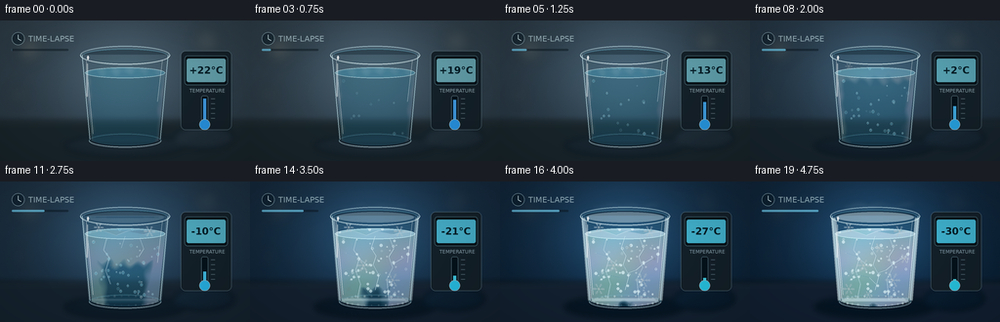

CODING AGENTS AS PIXEL WORLD MODELS
traex/GPT-5.6-Sol · phygen_091
点击播放 · 原生 RGB 像素
逐轮保存的候选
回放视频、检查图与代码变化。
每份候选均可单独播放。实际图片检查记录在下方工具轨迹中。
候选 01播放与检查图
点击播放 · 原生 RGB 像素

展开代码变化
--- 上一保存版本
+++ 本次保存版本
@@ -0,0 +1,309 @@
+from pathlib import Path
+import json, math
+import numpy as np
+from PIL import Image, ImageDraw, ImageFont, ImageFilter
+import artifact_io
+
+CASE_DIR = Path(__file__).resolve().parent
+SPEC = json.loads((CASE_DIR / 'task_spec.json').read_text())
+W, H, N = SPEC['width'], SPEC['height'], SPEC['frames']
+S = 4
+SW, SH = W*S, H*S
+rng_master = np.random.default_rng(91091)
+
+try:
+ FONT = ImageFont.truetype('/usr/share/fonts/truetype/dejavu/DejaVuSans.ttf', 8*S)
+ FONT_B = ImageFont.truetype('/usr/share/fonts/truetype/dejavu/DejaVuSans-Bold.ttf', 10*S)
+ FONT_S = ImageFont.truetype('/usr/share/fonts/truetype/dejavu/DejaVuSans.ttf', 5*S)
+except Exception:
+ FONT = FONT_B = FONT_S = ImageFont.load_default()
+
+def sc(v): return int(round(v*S))
+def pts(seq): return [(sc(x),sc(y)) for x,y in seq]
+def smoothstep(a,b,x):
+ if b == a: return float(x >= b)
+ t=max(0.0,min(1.0,(x-a)/(b-a)))
+ return t*t*(3-2*t)
+
+def ellipse(draw, box, **kw):
+ if 'width' in kw: kw['width']=max(1,sc(kw['width']))
+ draw.ellipse(tuple(sc(v) for v in box), **kw)
+def line(draw, xy, **kw):
+ if 'width' in kw: kw['width']=max(1,sc(kw['width']))
+ draw.line(pts(xy), **kw)
+def rounded(draw, box, radius, **kw): draw.rounded_rectangle(tuple(sc(v) for v in box), radius=sc(radius), **kw)
+
+def glass_bounds(y):
+ # Inner side walls of a tapered tumbler.
+ q=np.clip((y-36)/86,0,1)
+ return 87+7*q, 169-7*q
+
+def make_mask(kind='glass'):
+ m=Image.new('L',(SW,SH),0); d=ImageDraw.Draw(m)
+ if kind=='glass':
+ d.polygon(pts([(83,34),(173,34),(165,125),(91,125)]),fill=255)
+ d.ellipse((sc(91),sc(116),sc(165),sc(130)),fill=255)
+ elif kind=='water':
+ d.polygon(pts([(87,53),(169,53),(162,123),(94,123)]),fill=255)
+ d.ellipse((sc(94),sc(115),sc(162),sc(128)),fill=255)
+ d.ellipse((sc(87),sc(48),sc(169),sc(59)),fill=255)
+ return m
+GLASS_MASK=make_mask('glass')
+WATER_MASK=make_mask('water')
+
+# Stable features preserve the time-lapse camera feel.
+drops=[]
+rr=np.random.default_rng(127)
+for k in range(48):
+ y=float(rr.uniform(42,116)); xl,xr=glass_bounds(y)
+ x=float(rr.uniform(xl+3,xr-3)); r=float(rr.uniform(.55,1.45))
+ drops.append((x,y,r,float(rr.uniform(.06,.60))))
+
+bubbles=[]
+rr=np.random.default_rng(832)
+for k in range(37):
+ y=float(rr.uniform(59,119)); xl,xr=glass_bounds(y)
+ bubbles.append((float(rr.uniform(xl+4,xr-4)),y,float(rr.uniform(.35,1.25)),float(rr.uniform(.48,.92))))
+
+crack_specs=[
+ (109,58,[(109,58),(106,70),(112,78),(108,91),(113,105),(110,119)]),
+ (143,58,[(143,58),(147,69),(142,77),(146,88),(140,100),(142,121)]),
+ (128,56,[(128,56),(124,68),(129,76),(126,85),(132,96),(128,111)]),
+ (98,73,[(98,73),(110,77),(118,84),(127,87)]),
+ (157,78,[(157,78),(147,84),(139,91),(131,94)]),
+ (102,101,[(102,101),(113,96),(122,98),(130,106)]),
+]
+
+def dendrite_layer(progress):
+ lay=Image.new('RGBA',(SW,SH),(0,0,0,0)); d=ImageDraw.Draw(lay)
+ centers=[(101,47,5,0.34),(153,51,6,0.43),(116,86,7,0.53),(146,101,8,0.63),
+ (101,110,6,0.69),(132,68,5,0.76),(158,79,5,0.81),(121,116,4,0.88)]
+ for cx,cy,r,on in centers:
+ q=smoothstep(on,on+.13,progress)
+ if q<=0: continue
+ rad=r*(.25+.75*q)
+ alpha=int(95+110*q)
+ for a in range(0,360,60):
+ ang=math.radians(a)
+ ex=cx+math.cos(ang)*rad; ey=cy+math.sin(ang)*rad
+ line(d,[(cx,cy),(ex,ey)],fill=(231,248,255,alpha),width=.55)
+ # symmetric side branches
+ for u in (.42,.68):
+ bx=cx+(ex-cx)*u; by=cy+(ey-cy)*u
+ for sg in (-1,1):
+ aa=ang+sg*math.radians(38)
+ ll=rad*.24*(.7+.3*q)
+ line(d,[(bx,by),(bx+math.cos(aa)*ll,by+math.sin(aa)*ll)],fill=(220,244,255,alpha),width=.42)
+ ellipse(d,(cx-.75,cy-.75,cx+.75,cy+.75),fill=(242,253,255,alpha))
+ clipped=Image.new('RGBA',(SW,SH),(0,0,0,0))
+ clipped.paste(lay,(0,0),Image.composite(lay,Image.new('RGBA',(SW,SH)),GLASS_MASK).getchannel('A'))
+ return clipped
+
+def render(index):
+ p=index/(N-1)
+ cold=smoothstep(.10,.96,p)
+ freeze=smoothstep(.28,.94,p)
+ frost=smoothstep(.38,.98,p)
+ temp=round(22-52*smoothstep(0,1,p))
+
+ # Background made pixelwise for soft, photographic gradients.
+ yy,xx=np.mgrid[0:SH,0:SW]/S
+ base=np.zeros((SH,SW,3),dtype=np.float32)
+ warm=np.array([42,57,68.],np.float32); deep=np.array([12,33,53.],np.float32)
+ wall=warm*(1-cold)+deep*cold
+ base[:]=wall
+ glow=np.exp(-(((xx-126)/75)**2+((yy-55)/62)**2))*1.0
+ base += glow[...,None]*(np.array([31,38,42])*(1-cold)+np.array([19,43,62])*cold)
+ # Slight vertical gradient and stable grain.
+ base += ((1-yy/H)*8-4)[...,None]
+ grain=np.random.default_rng(222+index).normal(0,.75,(SH,SW,1))
+ base+=grain
+ base=np.uint8(np.clip(base,0,255))
+ img=Image.fromarray(base,'RGB').convert('RGBA')
+
+ # Defocused background lights become cooler and dimmer.
+ bg=Image.new('RGBA',(SW,SH),(0,0,0,0)); d=ImageDraw.Draw(bg)
+ lights=[(30,29,14),(61,18,7),(212,21,12),(232,58,7),(19,76,8)]
+ for j,(x,y,r) in enumerate(lights):
+ col=(122,171,190,int(35+18*(1-cold))) if j%2 else (198,188,153,int(34*(1-cold)+18))
+ ellipse(d,(x-r,y-r,x+r,y+r),fill=col)
+ bg=bg.filter(ImageFilter.GaussianBlur(sc(8)))
+ img=Image.alpha_composite(img,bg)
+
+ # Table plane and cold cast shadow.
+ lay=Image.new('RGBA',(SW,SH),(0,0,0,0)); d=ImageDraw.Draw(lay)
+ d.rectangle((0,sc(103),SW,SH),fill=(24-int(6*cold),37-int(5*cold),43+int(7*cold),255))
+ line(d,[(0,103),(256,103)],fill=(87,110,114,55),width=.7)
+ ellipse(d,(66,117,189,140),fill=(1,10,17,105+int(45*cold)))
+ ellipse(d,(178,108,240,132),fill=(0,9,16,70))
+ lay=lay.filter(ImageFilter.GaussianBlur(sc(3)))
+ img=Image.alpha_composite(img,lay)
+
+ # Small classic/digital thermometer instrument on the right.
+ inst=Image.new('RGBA',(SW,SH),(0,0,0,0)); d=ImageDraw.Draw(inst)
+ rounded(d,(185,31,237,112),5,fill=(19,31,39,245),outline=(118,146,157,150),width=sc(.6))
+ rounded(d,(189,36,233,66),3,fill=(6,18,24,255),outline=(92,129,140,220),width=sc(.6))
+ # cold-blue LCD glow
+ rounded(d,(191,39,231,63),2,fill=(104-int(35*cold),168+int(24*cold),179+int(41*cold),225))
+ temp_text=f'{temp:+d}°C'
+ tw=d.textbbox((0,0),temp_text,font=FONT_B)[2]
+ d.text((sc(211)-tw/2,sc(45)),temp_text,font=FONT_B,fill=(5,30,39,255))
+ d.text((sc(194),sc(69)),'TEMPERATURE',font=FONT_S,fill=(166,190,198,190))
+ # vertical level track with ticks
+ rounded(d,(206,77,213,103),2,fill=(6,18,27,255),outline=(130,158,166,160),width=sc(.45))
+ level_y=80+20*smoothstep(0,1,p)
+ d.rectangle((sc(208),sc(level_y),sc(211),sc(101)),fill=(63,153+int(55*cold),224,245))
+ for ty in (80,85,90,95,100): line(d,[(216,ty),(220,ty)],fill=(144,169,178,165),width=.45)
+ ellipse(d,(204,101,215,112),fill=(39,144+int(49*cold),220,255),outline=(176,210,220,210),width=.55)
+ img=Image.alpha_composite(img,inst)
+
+ # Back half of rim.
+ glass=Image.new('RGBA',(SW,SH),(0,0,0,0)); d=ImageDraw.Draw(glass)
+ ellipse(d,(82,26,174,45),fill=(164,219,235,18),outline=(212,244,251,175),width=.8)
+ ellipse(d,(85,29,171,42),fill=(10,31,42,90),outline=(91,166,190,140),width=.65)
+ # transparent body with a bluish cold cast
+ d.polygon(pts([(83,35),(173,35),(165,124),(91,124)]),fill=(80,170,199,12+int(22*cold)))
+ img=Image.alpha_composite(img,glass)
+
+ # Water / ice volume texture computed directly then masked.
+ vol=np.zeros((SH,SW,4),dtype=np.uint8)
+ ypix=yy
+ # distance-like fronts: top descends and side ice invades.
+ xleft=87+7*np.clip((ypix-53)/70,0,1)
+ xright=169-7*np.clip((ypix-53)/70,0,1)
+ side_dist=np.minimum(xx-xleft,xright-xx)
+ top_depth=np.maximum(0,ypix-52)
+ front_top=freeze*78
+ front_side=1.0+freeze*30
+ staticnoise=(np.sin(xx*.43+np.sin(ypix*.16))*2.0 + np.sin(ypix*.37+xx*.11))*1.2
+ frozen_field=np.maximum(front_top-top_depth+staticnoise,front_side-side_dist+staticnoise*.6)
+ local=np.clip(.5+frozen_field/7,0,1)
+ # remain clear early; cloudy crystalline solid later.
+ clear=np.stack([np.full_like(xx,37),np.full_like(xx,132),np.full_like(xx,165)],axis=-1)
+ crystal=np.stack([174+18*np.sin(ypix*.10),211+12*np.sin(xx*.07),224+14*np.sin((xx+ypix)*.08)],axis=-1)
+ rgb=clear*(1-local[...,None])+crystal*local[...,None]
+ depthshade=np.clip((ypix-51)/76,0,1)
+ rgb-=depthshade[...,None]*np.array([8,16,12])
+ vol[...,:3]=np.uint8(np.clip(rgb,0,255))
+ vol[...,3]=np.uint8(58+local*int(120*freeze)+cold*12)
+ volume=Image.fromarray(vol,'RGBA')
+ volume.putalpha(Image.composite(volume.getchannel('A'),Image.new('L',(SW,SH),0),WATER_MASK))
+ img=Image.alpha_composite(img,volume)
+
+ # Water/ice upper surface.
+ surf=Image.new('RGBA',(SW,SH),(0,0,0,0)); d=ImageDraw.Draw(surf)
+ iceop=int(40+180*freeze)
+ ellipse(d,(87,48,169,59),fill=(79+int(100*freeze),161+int(48*freeze),190+int(38*freeze),90+int(105*freeze)),
+ outline=(203,242,249,155+int(80*freeze)),width=.7)
+ if freeze>.18:
+ # slab edge and angular facets on the ice cap
+ line(d,[(91,53),(105,50),(119,55),(132,50),(147,54),(165,51)],fill=(229,249,253,iceop),width=.55)
+ d.polygon(pts([(105,50),(119,55),(128,51),(118,50)]),fill=(230,250,255,int(55*freeze)))
+ d.polygon(pts([(131,51),(147,54),(157,50),(142,50)]),fill=(112,181,208,int(55*freeze)))
+ img=Image.alpha_composite(img,surf)
+
+ # Interior stress fractures appear in sequence and brighten as solidification completes.
+ cracks=Image.new('RGBA',(SW,SH),(0,0,0,0)); d=ImageDraw.Draw(cracks)
+ for j,(sx,sy,path) in enumerate(crack_specs):
+ on=.43+j*.055
+ q=smoothstep(on,on+.18,p)
+ if q<=0: continue
+ count=max(2,int(1+(len(path)-1)*q))
+ sub=path[:count]
+ line(d,sub,fill=(232,250,255,int(85+105*q)),width=.48)
+ # dark refraction beside white stress line
+ shifted=[(x+0.6,y+0.35) for x,y in sub]
+ line(d,shifted,fill=(30,104,145,int(45+45*q)),width=.32)
+ cracks.putalpha(Image.composite(cracks.getchannel('A'),Image.new('L',(SW,SH),0),WATER_MASK))
+ img=Image.alpha_composite(img,cracks)
+
+ # Condensation droplets first; they become opaque frozen beads.
+ det=Image.new('RGBA',(SW,SH),(0,0,0,0)); d=ImageDraw.Draw(det)
+ for x,y,r,on in drops:
+ q=smoothstep(on,on+.18,p)
+ if q<=0: continue
+ if frost<.35:
+ ellipse(d,(x-r,y-r*1.15,x+r,y+r*1.15),fill=(105,190,215,int(25+65*q)),outline=(224,250,255,int(45+90*q)),width=.34)
+ ellipse(d,(x-r*.35,y-r*.72,x+r*.05,y-r*.25),fill=(255,255,255,int(100*q)))
+ else:
+ fr=smoothstep(.25,.8,frost)
+ ellipse(d,(x-r*1.15,y-r*1.15,x+r*1.15,y+r*1.15),fill=(220,244,250,int((60+125*fr)*q)),outline=(246,255,255,int(135*q)),width=.35)
+ for x,y,r,on in bubbles:
+ q=smoothstep(on,on+.1,p)
+ if q<=0: continue
+ ellipse(d,(x-r,y-r,x+r,y+r),fill=(220,244,249,int(28+42*q)),outline=(246,255,255,int(90+90*q)),width=.32)
+ det.putalpha(Image.composite(det.getchannel('A'),Image.new('L',(SW,SH),0),WATER_MASK))
+ img=Image.alpha_composite(img,det)
+
+ # Dendritic frost branches progressively spread on the glass surface.
+ img=Image.alpha_composite(img,dendrite_layer(p))
+
+ # Frost haze hugs walls and base, but retains transparency in center until very cold.
+ haze=Image.new('RGBA',(SW,SH),(0,0,0,0)); d=ImageDraw.Draw(haze)
+ if frost>0:
+ a=int(150*frost)
+ line(d,[(85,37),(92,122)],fill=(227,246,250,a),width=2.2+2.8*frost)
+ line(d,[(171,37),(164,122)],fill=(227,246,250,a),width=2.2+2.8*frost)
+ line(d,[(94,121),(162,121)],fill=(225,246,252,int(a*.85)),width=2+2*frost)
+ ellipse(d,(88,31,168,42),outline=(237,252,255,int(110*frost)),width=sc(1.1+frost))
+ # irregular crystalline frosting around bottom perimeter
+ for k in range(30):
+ ang=2*math.pi*k/30
+ x=128+35*math.cos(ang); y=122+4.7*math.sin(ang)
+ rr=.6+((k*17)%9)/9
+ ellipse(d,(x-rr,y-rr,x+rr,y+rr),fill=(231,250,253,int((65+65*(k%3==0))*frost)))
+ haze=haze.filter(ImageFilter.GaussianBlur(sc(.32)))
+ img=Image.alpha_composite(img,haze)
+
+ # Crisp front rim and glass reflections are always present.
+ front=Image.new('RGBA',(SW,SH),(0,0,0,0)); d=ImageDraw.Draw(front)
+ # mask upper back rim with body fill, then redraw the luminous front arc
+ line(d,[(84,35),(92,122)],fill=(214,245,252,175),width=.7)
+ line(d,[(172,35),(164,122)],fill=(209,243,251,165),width=.7)
+ line(d,[(88,40),(95,116)],fill=(255,255,255,120+int(55*cold)),width=.55)
+ line(d,[(166,41),(161,83)],fill=(244,255,255,125),width=.45)
+ # front rim as arc
+ d.arc((sc(82),sc(26),sc(174),sc(45)),0,180,fill=(233,253,255,235),width=sc(.8))
+ d.arc((sc(91),sc(116),sc(165),sc(130)),0,180,fill=(210,242,250,190),width=sc(.75))
+ d.arc((sc(91),sc(116),sc(165),sc(130)),180,360,fill=(113,182,202,130),width=sc(.55))
+ # high-specular strips
+ rounded(d,(88.2,44,90.1,78),.8,fill=(255,255,255,105))
+ ellipse(d,(89,36,91,40),fill=(255,255,255,210))
+ img=Image.alpha_composite(img,front)
+
+ # A faint cold mist over the rim in the final frames, with deterministic drift.
+ if p>.68:
+ mist=Image.new('RGBA',(SW,SH),(0,0,0,0)); d=ImageDraw.Draw(mist)
+ q=smoothstep(.68,1,p)
+ for j in range(6):
+ x=99+j*12+3*math.sin(index*.43+j)
+ y=30-j%2*3-index*.18
+ ellipse(d,(x-9,y-2.5,x+9,y+2.5),fill=(205,240,249,int(16+18*q)))
+ mist=mist.filter(ImageFilter.GaussianBlur(sc(3)))
+ img=Image.alpha_composite(img,mist)
+
+ # Small unobtrusive time-lapse indicator.
+ hud=Image.new('RGBA',(SW,SH),(0,0,0,0)); d=ImageDraw.Draw(hud)
+ ellipse(d,(12,12,25,25),fill=(8,25,37,135),outline=(184,220,229,160),width=.55)
+ line(d,[(18.5,14.5),(18.5,18.7),(21.5,20.4)],fill=(222,245,250,220),width=.7)
+ d.text((sc(29),sc(14)),'TIME-LAPSE',font=FONT,fill=(198,226,233,185))
+ # progressing five-second rail
+ rounded(d,(12,29,70,31),1,fill=(7,19,28,120))
+ rounded(d,(12,29,12+58*p,31),1,fill=(108,201,235,190))
+ img=Image.alpha_composite(img,hud)
+
+ # Subtle vignette.
+ arr=np.asarray(img.convert('RGB')).astype(np.float32)
+ y0,x0=np.mgrid[0:SH,0:SW]
+ vig=np.clip(((x0-SW/2)/(SW*.72))**2+((y0-SH/2)/(SH*.78))**2,0,1)
+ arr*= (1-.20*vig[...,None])
+ out=Image.fromarray(np.uint8(np.clip(arr,0,255))).resize((W,H),Image.Resampling.LANCZOS)
+ return np.asarray(out,dtype=np.uint8)
+
+def main():
+ frames=np.stack([render(i) for i in range(N)],axis=0)
+ artifact_io.save(frames,CASE_DIR)
+ print('saved',frames.shape,frames.dtype,'range',frames.min(),frames.max())
+
+if __name__=='__main__':
+ main()
候选 02播放与检查图
点击播放 · 原生 RGB 像素


展开代码变化
--- 上一保存版本
+++ 本次保存版本
@@ -119,7 +119,7 @@
grain=np.random.default_rng(222+index).normal(0,.75,(SH,SW,1))
base+=grain
base=np.uint8(np.clip(base,0,255))
- img=Image.fromarray(base,'RGB').convert('RGBA')
+ img=Image.fromarray(base).convert('RGBA')
# Defocused background lights become cooler and dimmer.
bg=Image.new('RGBA',(SW,SH),(0,0,0,0)); d=ImageDraw.Draw(bg)
@@ -145,7 +145,7 @@
rounded(d,(189,36,233,66),3,fill=(6,18,24,255),outline=(92,129,140,220),width=sc(.6))
# cold-blue LCD glow
rounded(d,(191,39,231,63),2,fill=(104-int(35*cold),168+int(24*cold),179+int(41*cold),225))
- temp_text=f'{temp:+d}°C'
+ temp_text=f'{temp:+d}\N{DEGREE SIGN}C'
tw=d.textbbox((0,0),temp_text,font=FONT_B)[2]
d.text((sc(211)-tw/2,sc(45)),temp_text,font=FONT_B,fill=(5,30,39,255))
d.text((sc(194),sc(69)),'TEMPERATURE',font=FONT_S,fill=(166,190,198,190))
@@ -186,7 +186,7 @@
rgb-=depthshade[...,None]*np.array([8,16,12])
vol[...,:3]=np.uint8(np.clip(rgb,0,255))
vol[...,3]=np.uint8(58+local*int(120*freeze)+cold*12)
- volume=Image.fromarray(vol,'RGBA')
+ volume=Image.fromarray(vol)
volume.putalpha(Image.composite(volume.getchannel('A'),Image.new('L',(SW,SH),0),WATER_MASK))
img=Image.alpha_composite(img,volume)
可观测工具轨迹
实际执行的命令与返回图片。
命令 1exit 0
/bin/bash -lc "cat prompt.txt && printf '\\n--- GENERATION_RULES.md ---\\n' && cat GENERATION_RULES.md && printf '\\n--- task_spec.json ---\\n' && cat task_spec.json"
命令 2exit 0
/bin/bash -lc "find . -maxdepth 3 -type f -printf '%p\\n' | sort && printf '\\n--- executables ---\\n' && command -v ffmpeg || true && command -v python3 || true && command -v blender || true"
命令 3exit 0
/bin/bash -lc "cat artifact_io.py && python3 - <<'PY' mods=['numpy','PIL','cv2','imageio','scipy'] for m in mods: try: x=__import__(m); print(m,'OK',getattr(x,'__version__','')) except Exception as e: print(m,'NO',e) PY"
命令 4exit 1
/bin/bash -lc "cat > generate.py <<'PY'
from pathlib import Path
import json, math
import numpy as np
from PIL import Image, ImageDraw, ImageFont, ImageFilter
import artifact_io
CASE_DIR = Path(__file__).resolve().parent
SPEC = json.loads((CASE_DIR / 'task_spec.json').read_text())
W, H, N = SPEC['width'], SPEC['height'], SPEC['frames']
S = 4
SW, SH = W*S, H*S
rng_master = np.random.default_rng(91091)
try:
FONT = ImageFont.truetype('/usr/share/fonts/truetype/dejavu/DejaVuSans.ttf', 8*S)
FONT_B = ImageFont.truetype('/usr/share/fonts/truetype/dejavu/DejaVuSans-Bold.ttf', 10*S)
FONT_S = ImageFont.truetype('/usr/share/fonts/truetype/dejavu/DejaVuSans.ttf', 5*S)
except Exception:
FONT = FONT_B = FONT_S = ImageFont.load_default()
def sc(v): return int(round(v*S))
def pts(seq): return [(sc(x),sc(y)) for x,y in seq]
def smoothstep(a,b,x):
if b == a: return float(x >= b)
t=max(0.0,min(1.0,(x-a)/(b-a)))
return t*t*(3-2*t)
def ellipse(draw, box, **kw): draw.ellipse(tuple(sc(v) for v in box), **kw)
def line(draw, xy, **kw):
if 'width' in kw: kw['width']=max(1,sc(kw['width']))
draw.line(pts(xy), **kw)
def rounded(draw, box, radius, **kw): draw.rounded_rectangle(tuple(sc(v) for v in box), radius=sc(radius), **kw)
def glass_bounds(y):
# Inner side walls of a tapered tumbler.
q=np.clip((y-36)/86,0,1)
return 87+7*q, 169-7*q
def make_mask(kind='glass'):
m=Image.new('L',(SW,SH),0); d=ImageDraw.Draw(m)
if kind=='glass':
d.polygon(pts([(83,34),(173,34),(165,125),(91,125)]),fill=255)
d.ellipse((sc(91),sc(116),sc(165),sc(130)),fill=255)
elif kind=='water':
d.polygon(pts([(87,53),(169,53),(162,123),(94,123)]),fill=255)
d.ellipse((sc(94),sc(115),sc(162),sc(128)),fill=255)
d.ellipse((sc(87),sc(48),sc(169),sc(59)),fill=255)
return m
GLASS_MASK=make_mask('glass')
WATER_MASK=make_mask('water')
# Stable features preserve the time-lapse camera feel.
drops=[]
rr=np.random.default_rng(127)
for k in range(48):
y=float(rr.uniform(42,116)); xl,xr=glass_bounds(y)
x=float(rr.uniform(xl+3,xr-3)); r=float(rr.uniform(.55,1.45))
drops.append((x,y,r,float(rr.uniform(.06,.60))))
bubbles=[]
rr=np.random.default_rng(832)
for k in range(37):
y=float(rr.uniform(59,119)); xl,xr=glass_bounds(y)
bubbles.append((float(rr.uniform(xl+4,xr-4)),y,float(rr.uniform(.35,1.25)),float(rr.uniform(.48,.92))))
crack_specs=[
(109,58,[(109,58),(106,70),(112,78),(108,91),(113,105),(110,119)]),
(143,58,[(143,58),(147,69),(142,77),(146,88),(140,100),(142,121)]),
(128,56,[(128,56),(124,68),(129,76),(126,85),(132,96),(128,111)]),
(98,73,[(98,73),(110,77),(118,84),(127,87)]),
(157,78,[(157,78),(147,84),(139,91),(131,94)]),
(102,101,[(102,101),(113,96),(122,98),(130,106)]),
]
def dendrite_layer(progress):
lay=Image.new('RGBA',(SW,SH),(0,0,0,0)); d=ImageDraw.Draw(lay)
centers=[(101,47,5,0.34),(153,51,6,0.43),(116,86,7,0.53),(146,101,8,0.63),
(101,110,6,0.69),(132,68,5,0.76),(158,79,5,0.81),(121,116,4,0.88)]
for cx,cy,r,on in centers:
q=smoothstep(on,on+.13,progress)
if q<=0: continue
rad=r*(.25+.75*q)
alpha=int(95+110*q)
for a in range(0,360,60):
ang=math.radians(a)
ex=cx+math.cos(ang)*rad; ey=cy+math.sin(ang)*rad
line(d,[(cx,cy),(ex,ey)],fill=(231,248,255,alpha),width=.55)
# symmetric side branches
for u in (.42,.68):
bx=cx+(ex-cx)*u; by=cy+(ey-cy)*u
for sg in (-1,1):
aa=ang+sg*math.radians(38)
ll=rad*.24*(.7+.3*q)
line(d,[(bx,by),(bx+math.cos(aa)*ll,by+math.sin(aa)*ll)],fill=(220,244,255,alpha),width=.42)
ellipse(d,(cx-.75,cy-.75,cx+.75,cy+.75),fill=(242,253,255,alpha))
clipped=Image.new('RGBA',(SW,SH),(0,0,0,0))
clipped.paste(lay,(0,0),Image.composite(lay,Image.new('RGBA',(SW,SH)),GLASS_MASK).getchannel('A'))
return clipped
def render(index):
p=index/(N-1)
cold=smoothstep(.10,.96,p)
freeze=smoothstep(.28,.94,p)
frost=smoothstep(.38,.98,p)
temp=round(22-52*smoothstep(0,1,p))
# Background made pixelwise for soft, photographic gradients.
yy,xx=np.mgrid[0:SH,0:SW]/S
base=np.zeros((SH,SW,3),dtype=np.float32)
warm=np.array([42,57,68.],np.float32); deep=np.array([12,33,53.],np.float32)
wall=warm*(1-cold)+deep*cold
base[:]=wall
glow=np.exp(-(((xx-126)/75)**2+((yy-55)/62)**2))*1.0
base += glow[...,None]*(np.array([31,38,42])*(1-cold)+np.array([19,43,62])*cold)
# Slight vertical gradient and stable grain.
base += ((1-yy/H)*8-4)[...,None]
grain=np.random.default_rng(222+index).normal(0,.75,(SH,SW,1))
base+=grain
base=np.uint8(np.clip(base,0,255))
img=Image.fromarray(base,'RGB').convert('RGBA')
# Defocused background lights become cooler and dimmer.
bg=Image.new('RGBA',(SW,SH),(0,0,0,0)); d=ImageDraw.Draw(bg)
lights=[(30,29,14),(61,18,7),(212,21,12),(232,58,7),(19,76,8)]
for j,(x,y,r) in enumerate(lights):
col=(122,171,190,int(35+18*(1-cold))) if j%2 else (198,188,153,int(34*(1-cold)+18))
ellipse(d,(x-r,y-r,x+r,y+r),fill=col)
bg=bg.filter(ImageFilter.GaussianBlur(sc(8)))
img=Image.alpha_composite(img,bg)
# Table plane and cold cast shadow.
lay=Image.new('RGBA',(SW,SH),(0,0,0,0)); d=ImageDraw.Draw(lay)
d.rectangle((0,sc(103),SW,SH),fill=(24-int(6*cold),37-int(5*cold),43+int(7*cold),255))
line(d,[(0,103),(256,103)],fill=(87,110,114,55),width=.7)
ellipse(d,(66,117,189,140),fill=(1,10,17,105+int(45*cold)))
ellipse(d,(178,108,240,132),fill=(0,9,16,70))
lay=lay.filter(ImageFilter.GaussianBlur(sc(3)))
img=Image.alpha_composite(img,lay)
# Small classic/digital thermometer instrument on the right.
inst=Image.new('RGBA',(SW,SH),(0,0,0,0)); d=ImageDraw.Draw(inst)
rounded(d,(185,31,237,112),5,fill=(19,31,39,245),outline=(118,146,157,150),width=sc(.6))
rounded(d,(189,36,233,66),3,fill=(6,18,24,255),outline=(92,129,140,220),width=sc(.6))
# cold-blue LCD glow
rounded(d,(191,39,231,63),2,fill=(104-int(35*cold),168+int(24*cold),179+int(41*cold),225))
temp_text=f'{temp:+d}°C'
tw=d.textbbox((0,0),temp_text,font=FONT_B)[2]
d.text((sc(211)-tw/2,sc(45)),temp_text,font=FONT_B,fill=(5,30,39,255))
d.text((sc(194),sc(69)),'TEMPERATURE',font=FONT_S,fill=(166,190,198,190))
# vertical level track with ticks
rounded(d,(206,77,213,103),2,fill=(6,18,27,255),outline=(130,158,166,160),width=sc(.45))
level_y=80+20*smoothstep(0,1,p)
d.rectangle((sc(208),sc(level_y),sc(211),sc(101)),fill=(63,153+int(55*cold),224,245))
for ty in (80,85,90,95,100): line(d,[(216,ty),(220,ty)],fill=(144,169,178,165),width=.45)
ellipse(d,(204,101,215,112),fill=(39,144+int(49*cold),220,255),outline=(176,210,220,210),width=.55)
img=Image.alpha_composite(img,inst)
# Back half of rim.
glass=Image.new('RGBA',(SW,SH),(0,0,0,0)); d=ImageDraw.Draw(glass)
ellipse(d,(82,26,174,45),fill=(164,219,235,18),outline=(212,244,251,175),width=.8)
ellipse(d,(85,29,171,42),fill=(10,31,42,90),outline=(91,166,190,140),width=.65)
# transparent body with a bluish cold cast
d.polygon(pts([(83,35),(173,35),(165,124),(91,124)]),fill=(80,170,199,12+int(22*cold)))
img=Image.alpha_composite(img,glass)
# Water / ice volume texture computed directly then masked.
vol=np.zeros((SH,SW,4),dtype=np.uint8)
ypix=yy
# distance-like fronts: top descends and side ice invades.
xleft=87+7*np.clip((ypix-53)/70,0,1)
xright=169-7*np.clip((ypix-53)/70,0,1)
side_dist=np.minimum(xx-xleft,xright-xx)
top_depth=np.maximum(0,ypix-52)
front_top=freeze*78
front_side=1.0+freeze*30
staticnoise=(np.sin(xx*.43+np.sin(ypix*.16))*2.0 + np.sin(ypix*.37+xx*.11))*1.2
frozen_field=np.maximum(front_top-top_depth+staticnoise,front_side-side_dist+staticnoise*.6)
local=np.clip(.5+frozen_field/7,0,1)
# remain clear early; cloudy crystalline solid later.
clear=np.stack([np.full_like(xx,37),np.full_like(xx,132),np.full_like(xx,165)],axis=-1)
crystal=np.stack([174+18*np.sin(ypix*.10),211+12*np.sin(xx*.07),224+14*np.sin((xx+ypix)*.08)],axis=-1)
rgb=clear*(1-local[...,None])+crystal*local[...,None]
depthshade=np.clip((ypix-51)/76,0,1)
rgb-=depthshade[...,None]*np.array([8,16,12])
vol[...,:3]=np.uint8(np.clip(rgb,0,255))
vol[...,3]=np.uint8(58+local*int(120*freeze)+cold*12)
volume=Image.fromarray(vol,'RGBA')
volume.putalpha(Image.composite(volume.getchannel('A'),Image.new('L',(SW,SH),0),WATER_MASK))
img=Image.alpha_composite(img,volume)
# Water/ice upper surface.
surf=Image.new('RGBA',(SW,SH),(0,0,0,0)); d=ImageDraw.Draw(surf)
iceop=int(40+180*freeze)
ellipse(d,(87,48,169,59),fill=(79+int(100*freeze),161+int(48*freeze),190+int(38*freeze),90+int(105*freeze)),
outline=(203,242,249,155+int(80*freeze)),width=.7)
if freeze>.18:
# slab edge and angular facets on the ice cap
line(d,[(91,53),(105,50),(119,55),(132,50),(147,54),(165,51)],fill=(229,249,253,iceop),width=.55)
d.polygon(pts([(105,50),(119,55),(128,51),(118,50)]),fill=(230,250,255,int(55*freeze)))
d.polygon(pts([(131,51),(147,54),(157,50),(142,50)]),fill=(112,181,208,int(55*freeze)))
img=Image.alpha_composite(img,surf)
# Interior stress fractures appear in sequence and brighten as solidification completes.
cracks=Image.new('RGBA',(SW,SH),(0,0,0,0)); d=ImageDraw.Draw(cracks)
for j,(sx,sy,path) in enumerate(crack_specs):
on=.43+j*.055
q=smoothstep(on,on+.18,p)
if q<=0: continue
count=max(2,int(1+(len(path)-1)*q))
sub=path[:count]
line(d,sub,fill=(232,250,255,int(85+105*q)),width=.48)
# dark refraction beside white stress line
shifted=[(x+0.6,y+0.35) for x,y in sub]
line(d,shifted,fill=(30,104,145,int(45+45*q)),width=.32)
cracks.putalpha(Image.composite(cracks.getchannel('A'),Image.new('L',(SW,SH),0),WATER_MASK))
img=Image.alpha_composite(img,cracks)
# Condensation droplets first; they become opaque frozen beads.
det=Image.new('RGBA',(SW,SH),(0,0,0,0)); d=ImageDraw.Draw(det)
for x,y,r,on in drops:
q=smoothstep(on,on+.18,p)
if q<=0: continue
if frost<.35:
ellipse(d,(x-r,y-r*1.15,x+r,y+r*1.15),fill=(105,190,215,int(25+65*q)),outline=(224,250,255,int(45+90*q)),width=.34)
ellipse(d,(x-r*.35,y-r*.72,x+r*.05,y-r*.25),fill=(255,255,255,int(100*q)))
else:
fr=smoothstep(.25,.8,frost)
ellipse(d,(x-r*1.15,y-r*1.15,x+r*1.15,y+r*1.15),fill=(220,244,250,int((60+125*fr)*q)),outline=(246,255,255,int(135*q)),width=.35)
for x,y,r,on in bubbles:
q=smoothstep(on,on+.1,p)
if q<=0: continue
ellipse(d,(x-r,y-r,x+r,y+r),fill=(220,244,249,int(28+42*q)),outline=(246,255,255,int(90+90*q)),width=.32)
det.putalpha(Image.composite(det.getchannel('A'),Image.new('L',(SW,SH),0),WATER_MASK))
img=Image.alpha_composite(img,det)
# Dendritic frost branches progressively spread on the glass surface.
img=Image.alpha_composite(img,dendrite_layer(p))
# Frost haze hugs walls and base, but retains transparency in center until very cold.
haze=Image.new('RGBA',(SW,SH),(0,0,0,0)); d=ImageDraw.Draw(haze)
if frost>0:
a=int(150*frost)
line(d,[(85,37),(92,122)],fill=(227,246,250,a),width=2.2+2.8*frost)
line(d,[(171,37),(164,122)],fill=(227,246,250,a),width=2.2+2.8*frost)
line(d,[(94,121),(162,121)],fill=(225,246,252,int(a*.85)),width=2+2*frost)
ellipse(d,(88,31,168,42),outline=(237,252,255,int(110*frost)),width=sc(1.1+frost))
# irregular crystalline frosting around bottom perimeter
for k in range(30):
ang=2*math.pi*k/30
x=128+35*math.cos(ang); y=122+4.7*math.sin(ang)
rr=.6+((k*17)%9)/9
ellipse(d,(x-rr,y-rr,x+rr,y+rr),fill=(231,250,253,int((65+65*(k%3==0))*frost)))
haze=haze.filter(ImageFilter.GaussianBlur(sc(.32)))
img=Image.alpha_composite(img,haze)
# Crisp front rim and glass reflections are always present.
front=Image.new('RGBA',(SW,SH),(0,0,0,0)); d=ImageDraw.Draw(front)
# mask upper back rim with body fill, then redraw the luminous front arc
line(d,[(84,35),(92,122)],fill=(214,245,252,175),width=.7)
line(d,[(172,35),(164,122)],fill=(209,243,251,165),width=.7)
line(d,[(88,40),(95,116)],fill=(255,255,255,120+int(55*cold)),width=.55)
line(d,[(166,41),(161,83)],fill=(244,255,255,125),width=.45)
# front rim as arc
d.arc((sc(82),sc(26),sc(174),sc(45)),0,180,fill=(233,253,255,235),width=sc(.8))
d.arc((sc(91),sc(116),sc(165),sc(130)),0,180,fill=(210,242,250,190),width=sc(.75))
d.arc((sc(91),sc(116),sc(165),sc(130)),180,360,fill=(113,182,202,130),width=sc(.55))
# high-specular strips
rounded(d,(88.2,44,90.1,78),.8,fill=(255,255,255,105))
ellipse(d,(89,36,91,40),fill=(255,255,255,210))
img=Image.alpha_composite(img,front)
# A faint cold mist over the rim in the final frames, with deterministic drift.
if p>.68:
mist=Image.new('RGBA',(SW,SH),(0,0,0,0)); d=ImageDraw.Draw(mist)
q=smoothstep(.68,1,p)
for j in range(6):
x=99+j*12+3*math.sin(index*.43+j)
y=30-j%2*3-index*.18
ellipse(d,(x-9,y-2.5,x+9,y+2.5),fill=(205,240,249,int(16+18*q)))
mist=mist.filter(ImageFilter.GaussianBlur(sc(3)))
img=Image.alpha_composite(img,mist)
# Small unobtrusive time-lapse indicator.
hud=Image.new('RGBA',(SW,SH),(0,0,0,0)); d=ImageDraw.Draw(hud)
ellipse(d,(12,12,25,25),fill=(8,25,37,135),outline=(184,220,229,160),width=.55)
line(d,[(18.5,14.5),(18.5,18.7),(21.5,20.4)],fill=(222,245,250,220),width=.7)
d.text((sc(29),sc(14)),'TIME-LAPSE',font=FONT,fill=(198,226,233,185))
# progressing five-second rail
rounded(d,(12,29,70,31),1,fill=(7,19,28,120))
rounded(d,(12,29,12+58*p,31),1,fill=(108,201,235,190))
img=Image.alpha_composite(img,hud)
# Subtle vignette.
arr=np.asarray(img.convert('RGB')).astype(np.float32)
y0,x0=np.mgrid[0:SH,0:SW]
vig=np.clip(((x0-SW/2)/(SW*.72))**2+((y0-SH/2)/(SH*.78))**2,0,1)
arr*= (1-.20*vig[...,None])
out=Image.fromarray(np.uint8(np.clip(arr,0,255))).resize((W,H),Image.Resampling.LANCZOS)
return np.asarray(out,dtype=np.uint8)
def main():
frames=np.stack([render(i) for i in range(N)],axis=0)
artifact_io.save(frames,CASE_DIR)
print('saved',frames.shape,frames.dtype,'range',frames.min(),frames.max())
if __name__=='__main__':
main()
PY
python3 generate.py"命令 5exit 0
/bin/bash -lc 'python3 generate.py'
命令 6exit 0
/bin/bash -lc "python3 - <<'PY'
import numpy as np
from pathlib import Path
from PIL import Image
x=np.load('pixels.npz')['pixels']
print('packed',x.shape,x.dtype)
fs=np.stack([np.asarray(Image.open(f'frames/{i:02d}.png')) for i in range(20)])
print('frames',fs.shape,fs.dtype)
print('mean abs adjacent:',np.abs(np.diff(fs.astype(float),axis=0)).mean(axis=(1,2,3)).round(2).tolist())
print('first-final MAD',np.abs(fs[-1].astype(float)-fs[0]).mean().round(2))
print('files',[(p.name,p.stat().st_size) for p in [Path('pixels.npz'),Path('index.html'),Path('inspection.png')]])
PY"命令 7exit 0
/bin/bash -lc "grep -n \"Image.fromarray\\|temp_text\" generate.py | cat -v"
命令 8exit 0
/bin/bash -lc "python3 - <<'PY'
p='generate.py'
s=open(p,encoding='utf8').read()
for l in s.splitlines():
if 'temp_text' in l: print(repr(l))
s=s.replace(\"Image.fromarray(base,'RGB')\",'Image.fromarray(base)').replace(\"Image.fromarray(vol,'RGBA')\",'Image.fromarray(vol)')
lines=s.splitlines()
for i,l in enumerate(lines):
if 'temp_text=f' in l: lines[i]=\" temp_text=f'{temp:+d}\\\\N{DEGREE SIGN}C'\"
open(p,'w',encoding='utf8').write('\\n'.join(lines)+'\\n')
PY
python3 generate.py
python3 - <<'PY'
import ast
ast.parse(open('generate.py').read())
print('syntax ok')
PY"命令 9exit 0
/bin/bash -lc "python3 - <<'PY'
import json, numpy as np
from PIL import Image
from pathlib import Path
spec=json.load(open('task_spec.json'))
a=np.load('pixels.npz')['pixels']
assert a.shape==(spec['height'],spec['width'],spec['frames']) and a.dtype==np.uint32
for i in range(spec['frames']):
im=np.asarray(Image.open(f'frames/{i:02d}.png'))
assert im.shape==(spec['height'],spec['width'],3) and im.dtype==np.uint8
assert np.array_equal(((im[...,0].astype(np.uint32)<<16)|(im[...,1].astype(np.uint32)<<8)|im[...,2]),a[...,i])
assert Path('index.html').is_file() and Path('generate.py').is_file()
print('validation passed: 20 RGB frames, 256x144, exact pixels.npz agreement')
PY"视觉工具实际返回图片 1

视觉工具实际返回图片 2

视觉工具实际返回图片 3

保存候选 2 份；完成命令 9 次；可验证图片返回 3 张。原始 API 响应与完整日志保留在本地。